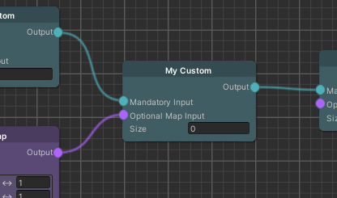
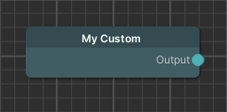
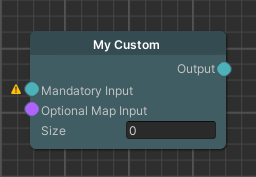

How to create a Custom Node
Intermediate | 30 mins | Programmers
Introduction
Goal
In this tutorial we will learn how to create a custom node with inputs and outputs for the node graph.

Prerequisite
- Familiarity with the node graph
Learning Path
Content
We start by defining our own node and add fields together with input ports. Later we show how this input data can be used to compute the output of the node by using a worker.
Creating a basic custom node
We create a new C# script using the name of our new node. In this example we will use MyCustomNode as the new node type.
In order to appear in the node graph we need to inherit from Holoride.ElasticSDK.Graph.Node<T> where T is the returned data type which is by our convention the node type itself.
public class MyCustomNode : Node<MyCustomNode>
{
}
This snippet will create a new node category based on your new type.
Note that to extend existing node types you can make your new class inherit either MapNode, SpawnerNode or PoseSetNode. (requires knowledge from later sections)
Completing this step will allow you to create a new node from the context menu of the node graph.

Adding fields and input ports
Next, we will see how we can add ports and fields to the newly created node.
[Input]
public MyCustomNode MandatoryInput;
[Input(optional:true)]
public MapNode OptionalMapInput;
public float Size;
This snipped shows that we can declare input fields simply by adding a serialized field, in this case simply by making it public.
In case our input should be another node we can declare a variable with the type of the node and add the Input attribute, even with some additional parameters.

Well done, we now have a node that accepts other nodes and parameters as input. The next step is looking under the hood how data processing works.
Data Processing
To calculate the output from the incoming data and make it available to the connected node, we create a worker that performs the data processing.
There are two steps involved:
- Implement a worker using the
PipelineWorkerBaseas a convenient base class, or for even more manual control, use theIPipelineWorkerinterface. - Implement the
IPipelineNodeinterface on the new custom node and generate a new worker in theGeneratePipelineWorkerinterface method.
public class MyCustomNode : Node<MyCustomNode>, IPipelineNode
{
/// [...] Variables omitted for brevity
public IPipelineWorker GeneratePipelineWorker()
{
return new MyCustomPipelineWorker(this);
}
}
public class MyCustomPipelineWorker : PipelineWorkerBase
{
private MyCustomNode Node;
public MyCustomPipelineWorker(MyCustomNode node)
{
Node = node;
}
// [...] PipelineWorkerBase methods omitted for brevity
}
The snippet above shows the implementation of the IPipelineNode interface and the creation of the worker based on this node.
We pass the node to its worker in the constructor to make the node data accessible.
The worker itself is based on the PipelineWorkerBase which already provides a lot of the world information.
This information includes the current world boundaries which, for example, is needed when generating terrain or spawning objects.
Data Processing Lifecycle
Now that we have an overview on how the node and worker interact we can have a deeper look into the worker.
public class MyCustomPipelineWorker : PipelineWorkerBase
{
// [...] Omitted
public float OutputField;
public override void CallInitResources() {}
public override void CallInit() {}
public override UniTask<LoadResourceResult> CallGatherResourcesAsync(GenerationContext context, Action<float> onProgressUpdate = null, CancellationToken cancellationToken = default)
{
return null;
}
public override UniTask CallProcessAsync(GenerationContext context, Action<float> onProgressUpdate = null, CancellationToken cancellationToken = default)
{
return null;
}
public override void CallCleanUp() {}
}
The snippet above shows methods originating from the PipelineWorkerBase and will be executed during the generation process based on the following order:
As probably expected we offer initialization and clean up methods before and after the update loop. In the update loop we acquire the required data for the current area of the world and then process it based on the node functionality.
One interesting separation can be seen in the resource and non resource based methods.
The InitResources and GatherResources methods should be able to run on their own, for example generate a cache by downloading the necessary data.
This is conceptually different from the non resource based methods that use the data the resource methods provide during gameplay.
An example for this would be to spawn objects or generate terrain from maps.
With our new understanding of the methods the worker provides, we can now have a look at reading data from other nodes and calculating our own output data.
Accessing inputs and outputs
Since the initialization and gathering of resources is very node specific we can focus more on the interaction between nodes.
Generally speaking we can use the GetInput method in the worker of this node together with the name of the port as the parameter to access connected workers.
For our MyCustomNode we can get the map data from the OptionalMapInput port or the MyCustomNode connected to the MandatoryInput port using this method.
var myCustomWorker = this.GetInput<MyCustomPipelineWorker>(nameof(MyCustomNode.MandatoryInput));
var mapWorker = this.GetInput<MapWorker>(nameof(MyCustomNode.OptionalMapInput));
This example shows that we can get a reference to the connected workers, by calling the GetInput method.
MyWorkerOutput = myCustomWorker.MyWorkerOutput * 2;
var myPosition = new GlobalPosition(Vector3.zero);
mapWorker.GetCPUReadBufferValueInterpolated(myPosition);
We can now access the methods and fields of the connected workers. For example, reading the value from a map similar to the snippet above, is used by spawners to set the y position for the newly spawned objects.
Summary
We started this journey by creating our custom node for the graph editor together with different input ports and a field. We then explored the inner workings of the node by looking at its worker, which performs the gathering of data and processing for each area that needs to be generated. In the end we also learned how to access data from other nodes and the need to store our result in a public field so other nodes can access it once processing is done.